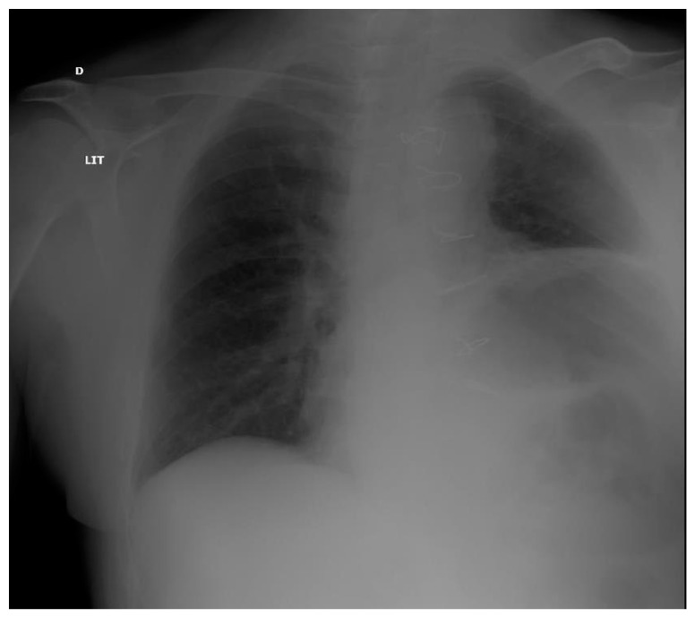
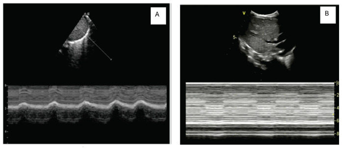
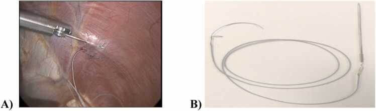
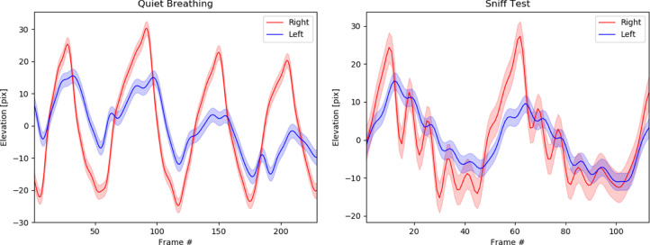

1849 — Liệt cơ hoành một bên sau mổ tim/ngực / Unilateral diaphragmatic paralysis after cardiac and thoracic surgery
Tags: pattern:nang-cao-nua-hoanh pattern:van-dong-nghich-thuong pattern:giam-do-day pattern:xepphoi-day pattern:giam-bien-do vung:co-hoanh vung:phoi score:DE-TF protocol:SA-co-hoanh protocol:sniff-test protocol:Xquang-nguc incidentaloma:khong
Mức chắc chắn (certainty): tổng hợp y văn (literature synthesis) — số liệu từ một đoàn hệ 1.316 ca mổ tim (X-quang, PMC12135679), một đoàn hệ 177 ca siêu âm sớm (PMC11496164), một đoàn hệ tiền cứu 122 ca (PMC9747253), một nghiên cứu điện sinh lý 78 ca (PMC320489), một loạt 2.280 ca mổ tim trẻ em (PMC13142676), một loạt 23 ca tạo hình cơ hoành (PMC12603488) và một tổng quan (PMC8779362). Phần điều trị/thời điểm can thiệp là suy luận thực hành (không có thử nghiệm ngẫu nhiên), được ghi rõ.
Câu chốt: sau mổ tim, thần kinh hoành bị lạnh/kéo/cắt là chuyện thường — 40,7% bệnh nhân có rối loạn chức năng cơ hoành trên siêu âm trong tuần đầu (PMC11496164), nhưng đa số hồi phục: 65% ca nâng cao hoành mới trên X-quang hồi phục khi theo dõi (PMC12135679), và chỉ 8% còn rối loạn sau ngày thứ 7 (PMC9747253). Điều đáng sợ không phải cái "hoành cao" mà là nhóm không hồi phục: ở nhóm này đặt lại nội khí quản 40% so với 0,9% (RR 45), viêm phổi 40% so với 6%, nằm ICU 8 so với 4 ngày — nên câu hỏi đúng là "hoành có co không, và có hồi phục không", không phải "hoành có cao không".
1. Tổng quan bệnh học – cơ chế hình ảnh
1.1 Giải phẫu quyết định kiểu tổn thương
- Thần kinh hoành xuất phát C3–C5, đi xuống trên cơ bậc thang trước (anterior scalene), vào lồng ngực trước rốn phổi, rồi ôm mặt ngoài màng tim xuống cơ hoành. Vì vậy nó nằm ngay trong trường mổ: hai bên sát màng tim – cơ tim, bên trái sát động mạch vú trong (internal mammary artery, IMA) và mỏm tim.
- Đá lạnh (ice slush) đổ quanh tim để bảo vệ cơ tim trong tuần hoàn ngoài cơ thể (cardiopulmonary bypass, CPB) chính là dung dịch 0–4 °C tiếp xúc trực tiếp thần kinh hoành; móc/harvest IMA kéo căng nhánh thần kinh; cautery gây tổn thương nhiệt. Đây là ba cơ chế chính (PMC8779362).
- Bằng chứng định lượng: trong 78 bệnh nhân đo điện sinh lý trước và 3 tuần sau mổ, 5/49 (10,2%) ca mổ tim có CPB + hạ nhiệt + đá lạnh mất chức năng thần kinh hoành TRÁI; 0/29 ca mổ không CPB (off-pump) hoặc mổ mạch ngoại vi bị tổn thương (PMC320489). Tức tổn thương do lạnh/CPB, không phải do "mở ngực" nói chung.
1.2 Vì sao nửa hoành bị liệt lại lên cao — và vì sao đáy phổi xẹp
- Cơ hoành liệt không tạo được lực hút; khi hít vào, áp lực âm trong lồng ngực vẫn được tạo bởi nửa hoành lành và các cơ liên sườn → hút tạng bụng lên phía ngực, làm nửa hoành liệt đi lên (nghịch thường, paradoxical) thay vì đi xuống.
- Hệ quả: xẹp đáy phổi (basal atelectasis) cùng bên, giảm dung tích sống, và trên phim nâng cao nửa hoành. Vì vậy trên X-quang ta thấy hai dấu hiệu cùng lúc: hoành cao và đáy phổi mờ/xẹp — cạm bẫy là chỉ đọc "hoành cao" mà bỏ đáy phổi.
1.3 Phục hồi: tổn thương myelin hồi phục được, tổn thương sợi trục thì không
- Tổn thương lạnh/kéo căng chủ yếu gây block dẫn truyền do mất myelin → hồi phục trong vài tuần đến vài tháng; đây là lý do 65% ca nâng cao hoành mới hồi phục (PMC12135679) và chỉ 8% còn rối loạn sau ngày 7 (PMC9747253).
- Cắt/đứt thần kinh (vd. cắt u trung thất, mổ lại) → mất chức năng vĩnh viễn; đây là nhóm cần can thiệp, không phải "chờ".
- TẠI SAO siêu âm phân biệt được: trên M-mode, đầu dò ghi vị trí vòm hoành theo thời gian; nửa hoành bình thường đi xuống khi hít vào (đường đi xuống), nửa hoành liệt đi lên hoặc phẳng — hướng đi mới là dấu chốt, không phải độ dày. Độ dày (Tdi) ở ca liệt một bên thường bình thường vì cơ chưa teo; đo Tdi một mình dễ bỏ sót.
1.4 Số liệu nền (bắt buộc thuộc)
| Chỉ số | Số | Nguồn |
|---|---|---|
| Tổn thương điện sinh lý thần kinh hoành khi CPB + hạ nhiệt + đá lạnh | 10,2% (5/49) | PMC320489 |
| Nâng cao hoành mới sau mổ tim (X-quang, 1.316 ca) | 27% (351/1.316) | PMC12135679 |
| Hồi phục nâng cao hoành khi theo dõi | 65% | PMC12135679 |
| Rối loạn chức năng cơ hoành sớm (siêu âm, 177 ca) | 40,7% | PMC11496164 |
| Rối loạn kéo dài sau ngày 7 (122 ca) | 8% | PMC9747253 |
| Liệt hoành sau mổ tim trẻ em (2.280 ca) | 4,7% (thể một phần 2,9%, hoàn toàn 1,8%) | PMC13142676 |
| Tần suất trong tổng quan | tới 75% | PMC8779362 |
2. Mẫu hình + chẩn đoán phân biệt theo cơ chế (gamut)
- Mẫu hình chung: nâng cao một nửa hoành (thường trái sau mổ tim) ± đáy phổi xẹp ± vận động nghịch thường khi hít mạnh/sniff.
- Gamut theo cơ chế:
- Thần kinh (neurogenic): tổn thương thần kinh hoành sau mổ tim/ngực, hội chứng Parsonage–Turner (đau vai rồi liệt), chèn ép do u trung thất/hạch, hẹp ống sống cổ, bệnh thần kinh–cơ (ALS, Guillain–Barré).
- Cơ (myopathic): giãn cơ hoành (eventration) — cơ mỏng bẩm sinh, không có tổn thương thần kinh; loạn dưỡng cơ.
- Cơ học (mechanical): tràn dịch dưới đáy phổi (subpulmonic effusion), xẹp phổi thùy dưới, giãn dạ dày/liệt ruột, Chilaiditi (đại tràng chen giữa gan–hoành), thoát vị hoành–thực quản lớn.
- Sau mổ/phẫu thuật: cắt thùy/phổi (hoành bị kéo lên do mất thể tích), vá thành ngực, dẫn lưu ngực hút mạnh.
- Gợi nhớ 5 nhóm: Neurogenic – Myopathic (eventration) – Mechanical (dịch/xẹp/giãn) – Surgical (cắt phổi/mổ lại) – Central (giảm drive do an thần).
3. Bảng so sánh phân biệt (ma trận đối chiếu)
| Thực thể (entity) | Hình ảnh điển hình (X-quang/SA/CT) | Chốt vào (rule-in) | Chốt loại (rule-out) | Gợi ý xác nhận |
|---|---|---|---|---|
| Liệt hoành một bên do tổn thương thần kinh | Hoành cao một bên, đáy phổi xẹp; M-mode đi lên khi hít vào; DE < 10 mm (nam)/< 9 mm (nữ), sniff < 18/16 mm | Vận động nghịch thường một bên + bối cảnh mổ tim/ngực | Hoành cao nhưng vẫn đi xuống khi sniff → không phải liệt | Siêu âm M-mode + sniff; điện sinh lý thần kinh hoành |
| Giãn cơ hoành (eventration) | Hoành cao nhẵn, liên tục, không đáy phổi xẹp rõ; không có mốc mổ | Hoành cao nhẵn bẩm sinh + không nghịch thường rõ | Nghịch thường rõ + mổ tim gần đây → liệt thần kinh | So phim cũ; CT; điện sinh lý nếu cần |
| Tràn dịch dưới đáy phổi (subpulmonic effusion) | Đỉnh hoành lệch ra ngoài (peak sign), khoảng cách hoành–bóng vị tăng, không nghịch thường | Đỉnh hoành lệch bên + thay đổi theo tư thế | Vận động nghịch thường thật + hoành cao đều → liệt | Siêu âm màng phổi, CT, chọc dịch |
| Xẹp phổi thùy dưới | Hoành cao + dấu thể tích (khe/trung thất kéo về), đông đặc đáy | Mất thể tích + phế quản hơi trong vùng xẹp | Không mất thể tích, không đông đặc → không xẹp | CT ngực |
| Rối loạn cơ hoành hai bên (VIDD/liệt hai bên) | Hai bên DE/TF thấp, khó cai máy, khó thở khi nằm ngửa | Hai bên giảm + thở máy kéo dài/orthopnea | Chỉ một bên bất thường → không phải hai bên | Siêu âm hai bên (bài 1776) |
| Giảm drive trung ương/an thần | Hoành không nghịch thường, TF thấp, hết khi giảm an thần | Cải thiện sau giảm an thần/thức tỉnh | Không cải thiện, nghịch thường → tổn thương thần kinh | Đáp ứng lâm sàng, EEG nếu cần |

X-quang ngực thẳng ở bệnh nhân sau mổ tim: nửa hoành trái nâng cao, đáy phổi trái mờ do xẹp; có dây thép xương ức. Đây là hình ảnh "hoành cao" điển hình — nhưng X-quang không chứng minh liệt, phải xem hướng vận động. Nguồn: Medicines (Basel) 2022, PMC8779362, CC BY 4.0.3.1 Ba dấu hiệu định vị trên X-quang (đọc đúng thứ tự)
- So độ cao hai bên: bình thường hoành phải cao hơn trái 1,5–2,5 cm; trong nghiên cứu Radboud, hoành phải cao hơn trái > 3,0 cm hoặc hoành trái ngang/cao hơn phải (chênh < 0,5 cm) được coi là nâng cao bất thường (PMC12135679). Đừng áp "phải cao hơn trái" cho mọi bệnh nhân — hoành trái cao hơn phải là bất thường.
- Đáy phổi: tìm mờ/xẹp đáy cùng bên; nếu có dấu thể tích (khe liên thùy, trung thất kéo về) thì nguyên nhân là xẹp, không phải liệt.
- Bóng vị/dạ dày: hoành cao đẩy bóng vị lên; nếu bóng hơi nằm trong lồng ngực và mất liên tục cơ hoành → nghĩ thoát vị hoành, không phải liệt.
4. Protocol chụp + ngưỡng + thuật toán
4.1 Trình tự chẩn đoán (không nhảy cóc)
- X-quang ngực thẳng, phim hít vào, đứng (nếu được): xác định nửa hoành nào cao, tìm đáy phổi xẹp, loại trừ thoát vị/tràn dịch.
- Siêu âm tại giường (đầu tay): M-mode đo hướng và biên độ hai nửa hoành; B-mode đo Tdi và tính TF; làm sniff (hít mạnh qua mũi) để tăng độ nhạy.
- Sniff test huỳnh quang khi siêu âm không kết luận hoặc cần bằng chứng khách quan: nửa hoành liệt đi lên khi sniff.
- Điện sinh lý thần kinh hoành (nếu có): đo thời tiềm (latency) và biên độ hai bên, phân biệt block dẫn truyền (có thể hồi phục) với đứt (không hồi phục).
- CT/MRI khi: không có bối cảnh mổ, nghi u/chèn ép trung thất, bệnh thần kinh–cơ, hoặc cần đánh giá di căn/u trung thất.
4.2 Ngưỡng định lượng (dùng đúng đơn vị)
| Chỉ số | Bình thường | Bất thường |
|---|---|---|
| DE (biên độ) khi thở yên lặng | 10–20 mm (người lớn) | < 10 mm (nam), < 9 mm (nữ) = rối loạn (PMC9747253) |
| DE khi sniff | > 18 mm (nam), > 16 mm (nữ) | < 18/16 mm = rối loạn (PMC9747253) |
| Tdi cuối thì thở ra | 1,5–3 mm | < 2 mm gợi ý teo (bài 1776) |
| TF = (Tdi hít vào − Tdi thở ra)/Tdi thở ra | 20–40% | < 20% = paresis/paralysis (PMC8779362) |
| Dung tích sống (VC) tư thế | giảm < 10% khi nằm ngửa | giảm ≥ 10–20% khi nằm ngửa gợi ý liệt một bên có ý nghĩa (suy luận từ PMC12603488: 71,2% → 59%, P = 0,002) |

M-mode qua vòm hoành: (A) nửa hoành bình thường có đường đi xuống rõ khi hít vào; (B) nửa hoành liệt gần như phẳng, mất biên độ. Chú ý: bề dày cơ (Tdi) ở ca một bên có thể bình thường — hướng đi mới là dấu chốt. Nguồn: J Saudi Heart Assoc 2026, PMC13142676, CC BY-NC-ND 4.0 (giữ nguyên ảnh gốc).4.3 Thuật toán "hoành cao sau mổ"
flowchart TD
A[Hoành cao một bên trên X-quang sau mổ tim/ngực] --> B{Đáy phổi xẹp + mất thể tích?}
B -->|Có| C[Xẹp phổi: điều trị xẹp, không gọi liệt]
B -->|Không| D[Siêu âm M-mode hai bên + sniff]
D --> E{Hướng đi lên khi hít vào/sniff?}
E -->|Không| F[Không liệt: tìm dịch dưới đáy, giãn dạ dày, Chilaiditi]
E -->|Có| G[Liệt một bên: đo DE, TF, VC tư thế]
G --> H{Bệnh nhân cai máy được trong 7 ngày?}
H -->|Có| I[Theo dõi: đa số hồi phục trong vài tuần đến vài tháng]
H -->|Không| J{Nghĩ đứt thần kinh: mổ lại, cắt u, chấn thương?}
J -->|Có| K[Xem xét tạo hình cơ hoành sớm + phục hồi chức năng]
J -->|Không| L[Thử NIV + vật lý trị liệu hô hấp; đánh giá lại 4-6 tuần]
L --> M{Còn phụ thuộc máy thở/viêm phổi tái diễn?}
M -->|Có| K
M -->|Không| I
4.4 Điều trị — bậc thang và bằng chứng
- Theo dõi + phục hồi chức năng là bước đầu: 65% hồi phục (PMC12135679), phần lớn trong vài tuần–vài tháng; không có thuốc đặc hiệu.
- Hỗ trợ hô hấp: NIV khi khó thở/giảm oxy; nhóm rối loạn kéo dài dùng NIV 8 giờ (0–34) so với 0 giờ ở nhóm hồi phục (PMC9747253). Tập cơ hít vào, vỗ rung dẫn lưu, kiểm soát đau để bệnh nhân dám thở sâu.
- Tạo hình cơ hoành (diaphragmatic plication): chỉ định khi không cai được máy thở, viêm phổi tái diễn, khó thở khi nằm ngửa, hoặc VC giảm nhiều khi nằm ngửa. Kết quả ở 23 ca người lớn: VC 71,2% → 88,1% dự đoán (P = 0,03), khoảng cách đỉnh phổi–hoành 12 → 19 cm sau 6 tháng (P = 0,001), không tử vong chu phẫu, nằm viện 7,7 ± 5 ngày (PMC12603488). Ở trẻ, tạo hình giúp cai máy nhưng để lại hạn chế thông khí và giảm bão hòa khi gắng sức sau 5 năm (PMC12490969) — phải tư vấn trước.
- Kích thích thần kinh hoành/tạo nhịp hoành (diaphragm pacing): chỉ khi thần kinh hoành còn nguyên phía dưới tổn thương; loạt 900 ca ghép tim/LVAD có 10 ca dùng, 8 ca mạn tính hồi phục 87%, không biến cố (PMC12166398). Đây là lựa chọn chọn lọc, không phải thường quy.
- Thời điểm tạo hình: không có thử nghiệm ngẫu nhiên; suy luận thực hành — chờ 4–6 tuần nếu còn khả năng hồi phục, nhưng không chờ khi nghi đứt thần kinh hoặc bệnh nhân phụ thuộc máy thở kéo dài.

Điện cực tạo nhịp hoành: (A) đặt vào cơ hoành qua nội soi ổ bụng; (B) điện cực và dây dẫn. Chỉ dùng khi thần kinh hoành còn dẫn truyền — đứt thần kinh thì tạo nhịp vô ích. Nguồn: JHLT Open 2025, PMC12166398, CC BY 4.0.5. Biến thể bình thường và cạm bẫy
- "Hoành cao" không phải "hoành liệt": nâng cao hoành mới gặp ở 27% ca mổ tim nhưng 65% hồi phục và không làm tăng biến chứng trong đoàn hệ đó (PMC12135679) — đừng gắn nhãn "liệt" chỉ vì phim.
- Hoành phải cao hơn trái là bình thường (1,5–2,5 cm); ngược lại, hoành trái cao hơn phải là dấu hiệu cần giải thích.
- Tràn dịch dưới đáy phổi làm hoành "cao" giả: tìm peak sign (đỉnh hoành lệch ra ngoài), khoảng cách hoành–bóng vị tăng, và không có nghịch thường.
- Chilaiditi (đại tràng giữa gan và hoành) tạo bóng hơi dưới hoành giả thoát vị — đọc kỹ bờ cơ hoành liên tục, không có quai ruột trong ngực.
- Siêu âm: đo Tdi một mình dễ bỏ sót — trong liệt một bên, Tdi hai bên thường bình thường; phải đo hướng và so sánh hai bên.
- Sniff huỳnh quang là hình chiếu 2D của mặt cong 3D, dễ gọi nghịch thường quá mức: một ca được báo "nghịch thường nhẹ" nhưng khi mô hình hóa quỹ đạo thì không có nghịch thường có ý nghĩa (PMC8958460). Đừng quyết định tạo hình chỉ dựa trên một lần đọc mắt.
- Đau sau mổ/guarding làm bệnh nhân không dám hít sâu → DE thấp giả tạo; đo lại khi đau giảm hoặc dùng sniff.
- Tổn thương hai bên dễ bỏ sót: bệnh nhân khó thở khi nằm ngửa, thở nhanh nông, cai máy thất bại — luôn đo cả hai bên, không chỉ bên cao.

Quỹ đạo nửa hoành phải (đỏ) và trái (xanh) theo thời gian: bên trái biên độ thấp hơn ở cả thở yên lặng và sniff. Bài học: đọc mắt trên fluoroscopy dễ sai; đo định lượng (biên độ, tương quan theo thời gian) giúp tránh gọi nghịch thường oan. Đơn vị ở đây là pixel, không phải mm — chỉ dùng để so sánh tương đối. Nguồn: Radiology Case Reports 2022, PMC8958460, CC BY 4.0.6. Tự lượng giá — Blind Quiz
Ca 1 — Nam 68 tuổi, mổ CABG 5 ngày, khó thở khi nằm ngửa, X-quang thấy nửa hoành trái cao. Nhìn phim trước, mô tả 3 dấu hiệu.
- Hỏi: nửa hoành nào cao? Có dấu hiệu mất thể tích không? Dấu hiệu nào trên phim không đủ để gọi liệt?
Bấm để hiện đáp án (findings + chẩn đoán)
- Findings: nửa hoành trái nâng cao, đáy phổi trái mờ (xẹp đáy), dây thép xương ức; không có dấu thể tích mạnh (khe/trung thất kéo về) để quy hoàn toàn cho xẹp.
- Chẩn đoán: nghĩ liệt cơ hoành trái do tổn thương thần kinh hoành sau mổ tim; nhưng X-quang chỉ gợi ý — phải siêu âm M-mode/sniff để xác nhận hướng vận động nghịch thường và đo DE (ngưỡng < 9 mm ở nữ, < 10 mm ở nam).
- Vì sao khó thở khi nằm ngửa: nửa hoành liệt không giữ được tạng bụng khi nằm → giảm VC tư thế (ca tạo hình: 71,2% → 59%, P = 0,002).
- Nguồn ảnh: Medicines (Basel) 2022, PMC8779362, CC BY 4.0.
Ca 2 — Bệnh nhân cai máy thất bại 3 lần sau mổ van. M-mode dưới đây là của bên nào và nói gì?
- Hỏi: (A) và (B) khác nhau ở đâu? Nếu (B) là bên liệt, Tdi có nhất thiết giảm không? Bước tiếp theo?
Bấm để hiện đáp án
- Findings: (A) đường M-mode đi xuống rõ khi hít vào (biên độ tốt); (B) gần như phẳng, mất biên độ.
- Chẩn đoán: (B) phù hợp liệt/paresis; Tdi có thể bình thường vì chưa teo → không loại trừ bằng độ dày.
- Bước tiếp theo: đo DE hai bên (ngưỡng 10 mm nam / 9 mm nữ), sniff (18/16 mm), TF (< 20% = paresis); đánh giá cai máy, VC tư thế, và NIV; nếu phụ thuộc máy thở kéo dài → cân nhắc tạo hình.
- Nguồn ảnh: J Saudi Heart Assoc 2026, PMC13142676, CC BY-NC-ND 4.0.
Ca 3 — Bệnh nhân hoành cao, fluoroscopy báo "nghịch thường nhẹ". Đồ thị dưới đây dạy điều gì?
- Hỏi: đường đỏ và xanh là gì? Vì sao không nên quyết định tạo hình chỉ dựa vào một lần đọc fluoroscopy?
Bấm để hiện đáp án
- Findings: đỏ = hoành phải, xanh = hoành trái; bên trái biên độ thấp hơn ở cả hai điều kiện, nhưng không có nghịch thường rõ khi phân tích quỹ đạo.
- Chẩn đoán: yếu cơ hoành trái, chưa chắc liệt hoàn toàn; quyết định can thiệp cần siêu âm + VC tư thế + triệu chứng, không chỉ hình huỳnh quang.
- Bài học: huỳnh quang là 2D, đọc mắt dễ overcall; đo định lượng giúp tránh mổ oan.
- Nguồn ảnh: Radiology Case Reports 2022, PMC8958460, CC BY 4.0.
Bài liên quan chéo
- 1776 – Bệnh cơ hoành do thở máy (VIDD): Tdi/TF/DE, teo 6%/ngày
- 045 – Thành ngực & hoành
- 098 – Barotrauma & tràn khí màng phổi áp lực ở bệnh nhân thở máy
- 1850 – Siêu âm cơ hoành dự báo cai máy ở trẻ sơ sinh/trẻ nhỏ
- 1885 – Viêm màng ngoài tim co thắt
Không dùng để chẩn đoán độc lập khi chưa có người hướng dẫn.